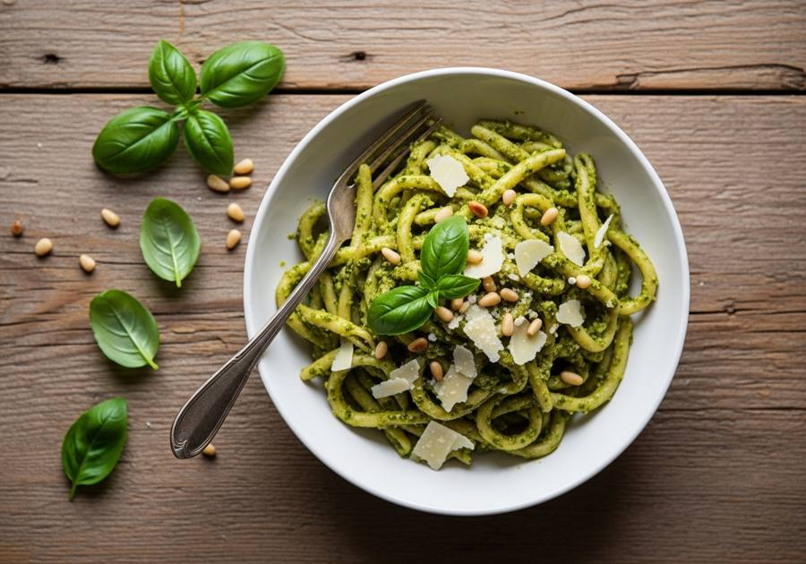

← Alle recepten

🍽 4 porties
⏱ Voorbereiding: 10 min
🔥 Bereiding: 10 min
Σ Totaal: 20 min
Ingrediënten
- 400 g pasta (bv. penne of fusilli)
- 60 g verse basilicum
- 50 g pijnboompitten
- 50 g parmezaanse kaas, geraspt (of vegetarische variant)
- 1 teentje knoflook
- 80 ml olijfolie
- Zout en peper naar smaak
- 1 el pastawater (extra, indien nodig)
Bereiding
- Kook de pasta beetgaar volgens de aanwijzingen op de verpakking. Bewaar een kopje pastawater voor je afgiet.
- Rooster de pijnboompitten kort in een droge pan tot ze goudbruin zijn.
- Blend de basilicum, pijnboompitten, parmezaan, knoflook en olijfolie tot een gladde pesto. Breng op smaak met zout en peper.
- Meng de pesto door de warme pasta en voeg indien nodig een scheutje pastawater toe voor een romige binding.
- Serveer direct met extra parmezaan erover.